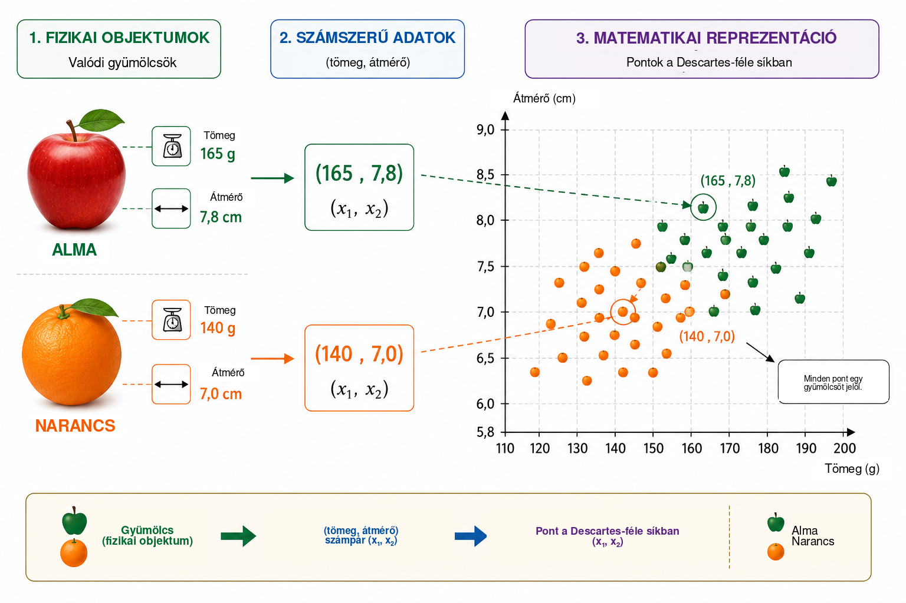
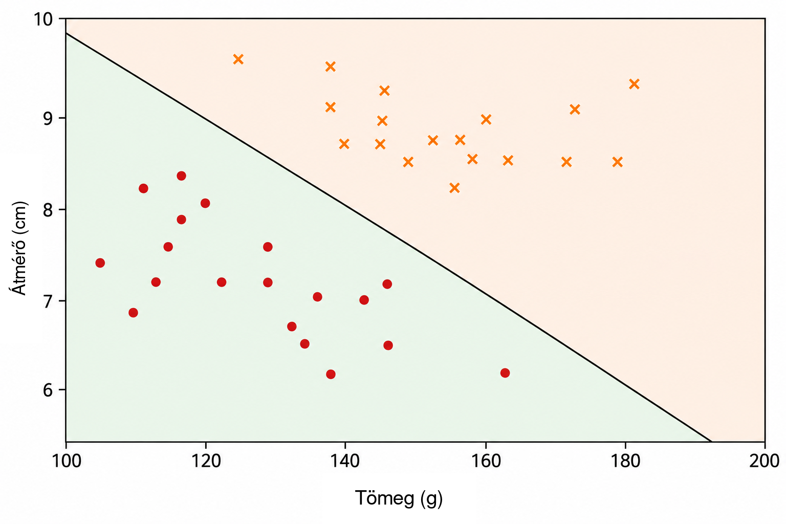
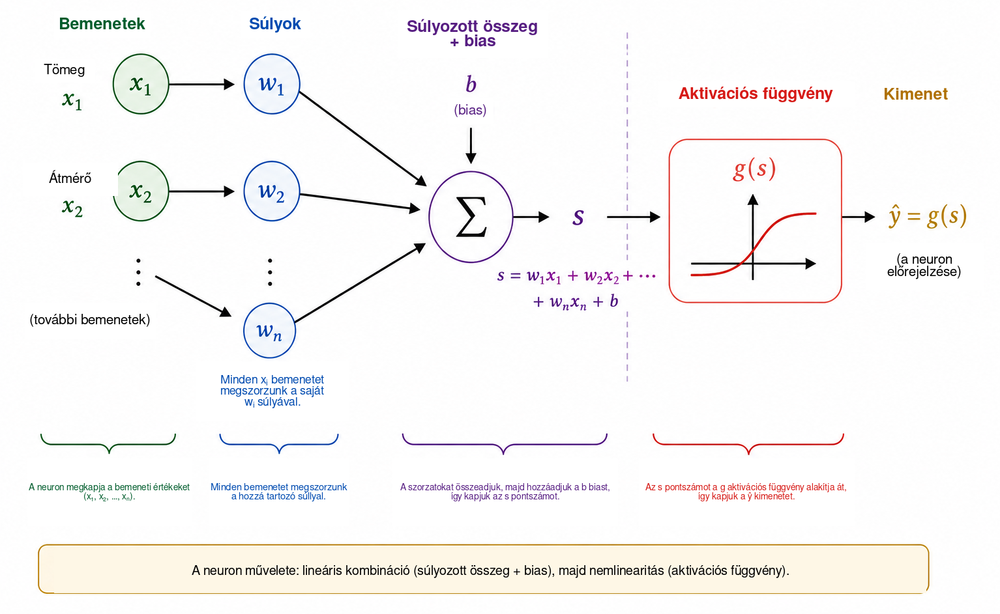
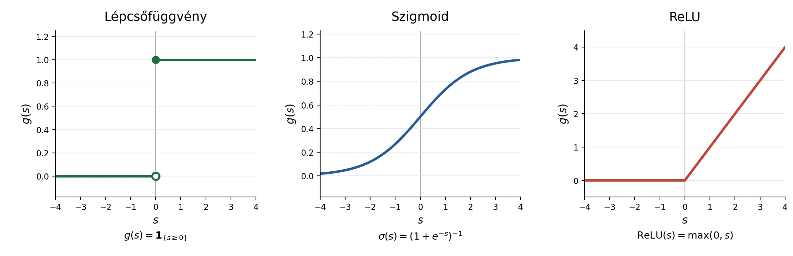
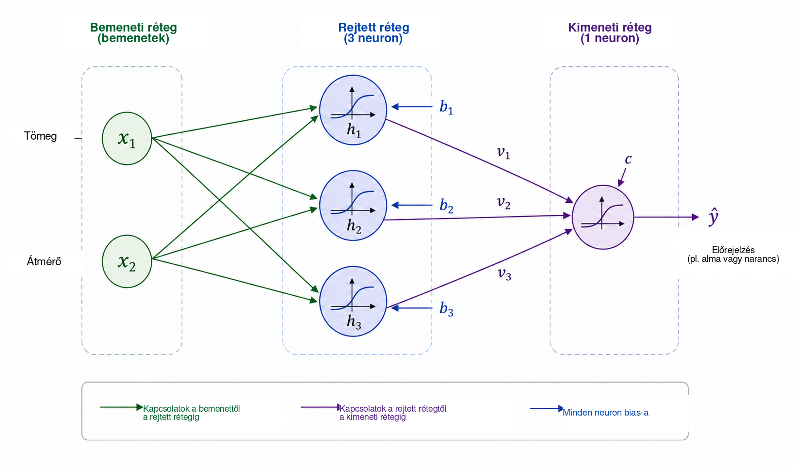
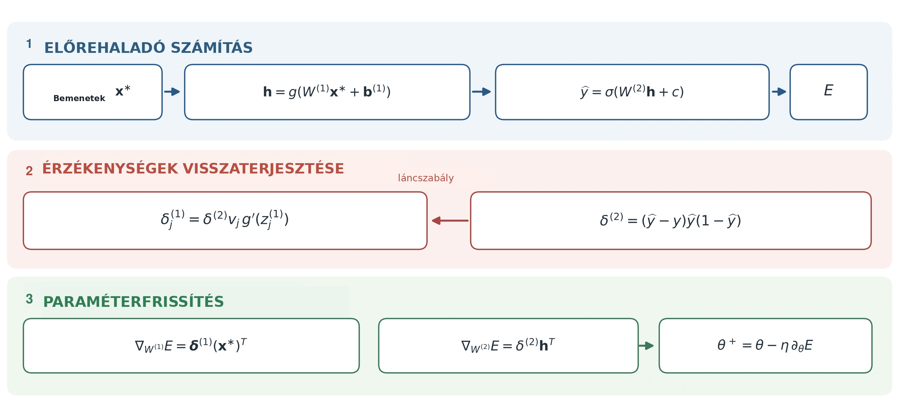
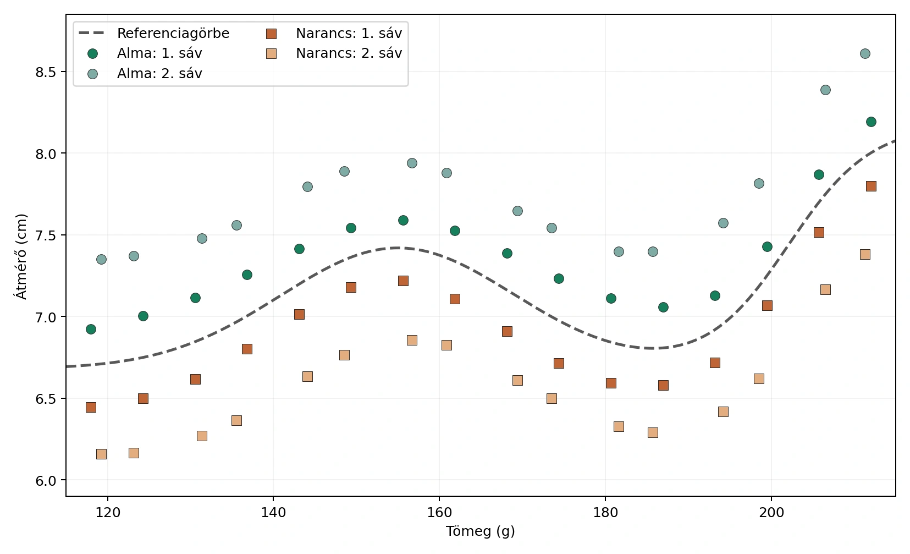
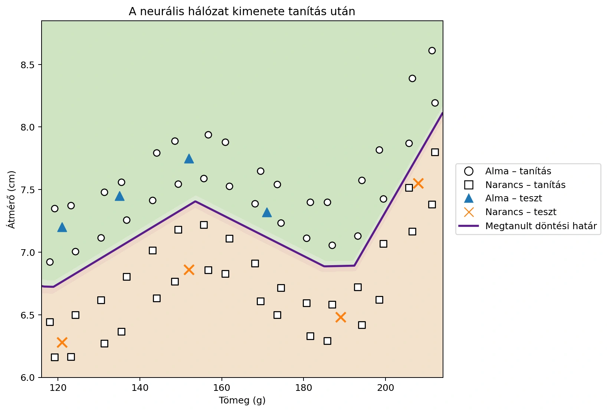

Mikor képes tanulni egy számítógép?
A mindennapi életben szinte észrevétlenül hozunk osztályozási döntéseket. Ha ránézünk egy gyümölcsre, gyorsan felismerjük, hogy alma vagy narancs; amikor üzenet érkezik a telefonunkra, megkülönböztetjük a valódi kommunikációt a kéretlen reklámtól; orvosi elemzésben több mérés együtt támogathat egy döntést; pénzügyi intézményekben pedig számos információt értékelnek a hitelnyújtás előtt. Mindezekben a példákban egyszerre több jellemzőt veszünk figyelembe egy válasz előállításához.
Sok hagyományos számítógépes programban az ilyen válaszhoz vezető szabályokat a programozó kifejezetten megadja. Ez a megközelítés jól működik, ha a szabályok ismertek és világosan megfogalmazhatók. Kevésbé hatékony azonban akkor, amikor az adatok nagyon változatosak, vagy amikor nehéz előre felsorolni egy jó döntéshez szükséges összes feltételt. Ez természetes kérdéshez vezet:
Készíthetünk-e olyan programot, amely példákból tanulja meg a döntési szabályt ahelyett, hogy azt előre megkapná?
Ez a gépi tanulás egyik központi gondolata, amely a mesterséges intelligencia azon területe, amely adatokból illesztett modellekkel foglalkozik . Felügyelt tanulási feladatban az algoritmus példákat kap a hozzájuk tartozó helyes válaszokkal együtt, és olyan modellt keresünk, amely a tanítás során nem használt esetekre is hasznos előrejelzéseket ad. Az erre a célra kidolgozott sok modell közül különösen jelentőssé váltak a mesterséges neurális hálózatok, amelyeket többek között képfelismerésben, nyelvfeldolgozásban, jelelemzésben és idősor-előrejelzésben alkalmaznak .
A neurális hálózatoknak a matematika, a számítástechnika és az iskolai oktatás közötti hídként való használatát Batista és Martins már tárgyalták a Professor de Matemática Online folyóiratban ; munkájuk tanárképzéssel, Pythonnal és számjegyfelismeréssel kapcsolatos tevékenységet mutat be. Jelen cikk kiegészítő megközelítést követ. Fő célunk egy kis neurális hálózat belső matematikájának feltárása: az analitikus geometriától indulunk, majd lépésről lépésre eljutunk a gradiens kiszámításáig és a visszaterjesztés kézi megvalósításáig.
A modern alkalmazások kifinomultsága ellenére a neurális hálózat matematikai magja viszonylag ismert fogalmakkal is bevezethető. Alapszinten a neurális hálózat olyan függvények kompozíciója, amelyek paramétereit adatok alapján állítjuk be. Egy egyszerű geometriai problémával kezdünk, az elválasztó egyenest mesterséges neuronként értelmezzük újra, több neuront összekapcsolunk, megvizsgáljuk az aktivációs függvények szerepét, és megmutatjuk, miként használhatók a deriváltak a hálózat paramétereinek automatikus módosítására. Ezután egy teljes, kisméretű példát valósítunk meg Pythonban, közvetlen megfelelést tartva fenn az egyenletek és a kód között.
A probléma matematikai reprezentációja
A neurális hálózat működésének megértéséhez szándékosan egyszerű problémával kezdünk: almák és narancsok megkülönböztetésével. Egy gyümölcsnek sok olyan tulajdonsága van, amely hasznos lehet ehhez a feladathoz, például a színe, tömege, átmérője, felülete vagy illata. Egy kezdeti matematikai modellnek azonban nem kell ezt a teljes összetettséget tartalmaznia. Mindössze két könnyen mérhető mennyiséget használunk: a tömeget grammban és az átmérőt centiméterben.
Minden gyümölcsöt tehát egy rendezett párral reprezentálunk: \[(x_1,x_2),\] ahol \[x_1=\text{tömeg} \qquad\text{és}\qquad x_2=\text{átmérő}.\]
Így a \((155,\;7.2)\) pár egy \(155\) g tömegű és \(7.2\) cm átmérőjű gyümölcsöt jelent. A fizikai objektumot két számszerű mérésre cserélve minden gyümölcshöz egy pontot rendelünk a Descartes-féle síkban: az első koordináta a tömeg, a második az átmérő. Az 1. ábra ezt a reprezentációt szemlélteti almák és narancsok hipotetikus halmazán.

Ez az átalakítás megváltoztatja a probléma látszólagos természetét. Ahelyett, hogy közvetlenül azt kérdeznénk, miként ismerhető fel egy alma vagy narancs, geometriai kérdést tehetünk fel: hogyan választhatók szét a két osztályhoz tartozó pontok a síkban? Ez a nézőpontváltás alapvető a gépi tanulásban. A képeket, szövegeket, hangokat és kísérleti jeleket számszerű reprezentációvá kell alakítani, mielőtt egy algoritmus feldolgozhatná őket. Példánkban minden objektumnak csak két koordinátája van; valós alkalmazásokban egy reprezentáció több száz, több ezer vagy akár több millió komponensből is állhat. Az elv ugyanaz: minden példához számok egy gyűjteményét rendeljük, a modell pedig olyan szabályt keres, amely ezt a reprezentációt a kívánt válaszhoz rendeli.
A legegyszerűbb rendelkezésre álló geometriai szabállyal kezdünk, és megkérdezzük, hogy egyetlen egyenes képes-e megfelelően elválasztani az almákhoz tartozó pontokat a narancsokhoz tartozó pontoktól.
Az egyenes mint osztályozó
Miután minden gyümölcsöt pontként ábrázoltunk a Descartes-féle síkban, az osztályozás geometriai problémává válik: el tudja-e választani egy egyenes az almákat a narancsoktól? Ez a kérdés megragadja a gépi tanulás egy fontos módszercsaládjának, a lineáris osztályozóknak az alapötletét.
Tekintsünk egy, az adatfelhőt metsző egyenest, ahogy az 2. ábra mutatja. Az egyenes két félsíkra osztja a síkot. Ha az almákhoz tartozó pontok többsége az egyik oldalon, a narancsokhoz tartozó pontok többsége pedig a másikon helyezkedik el, akkor egy új gyümölcs egyeneshez viszonyított helyzete osztályozási szabályként használható. Tömegének és átmérőjének megmérése után a gyümölcsöt pontként ábrázoljuk, majd meghatározzuk, hogy az egyenes melyik oldalán fekszik.

A \((x_1,x_2)\) Descartes-féle síkban egy egyenes felírható \[w_1x_1+w_2x_2+b=0, \qquad (w_1,w_2)\neq(0,0).\]
A \((w_1,w_2)\) vektor merőleges az egyenesre, ezért meghatározza annak irányát, míg a \(b\) paraméter a helyzetét befolyásolja. Ez a reprezentáció kis redundanciát tartalmaz: \(w_1\), \(w_2\) és \(b\) ugyanazzal a nemnulla konstanssal történő megszorzása pontosan ugyanazt az egyenest adja. A határt leíró paraméterek ezért nem egyértelműek. Számszerű értelmezésük a változók skálájától is függ. Mivel a tömeget grammban, az átmérőt centiméterben mérjük, \(w_1\) és \(w_2\) számszerű nagysága nem hasonlítható közvetlenül össze a különböző mértékegységek figyelembevétele nélkül.
Az egyenes egyenlete egyszerű módot ad annak eldöntésére, hogy egy pont a határ melyik oldalán található. Definiáljuk a pontszámot: \[s(x_1,x_2)=w_1x_1+w_2x_2+b.\]
Ha \(s(x_1,x_2)=0\), a pont az egyenesen fekszik. Ha \(s(x_1,x_2)>0\), az egyik félsíkban, ha \(s(x_1,x_2)<0\), a másikban helyezkedik el. Ha úgy döntünk, hogy a pozitív pontszámok az almáknak, a negatívak pedig a narancsoknak felelnek meg, akkor a szabály: \[\begin{cases} s(x_1,x_2)\geq 0 & \Longrightarrow \text{alma},\\ s(x_1,x_2)<0 & \Longrightarrow \text{narancs}. \end{cases}\]
Például tekintsük a következő határt: \[w_1=\frac{1}{10}, \qquad w_2=2, \qquad b=-30.\] Egy \(160\) g tömegű és \(7.8\) cm átmérőjű gyümölcs esetén \[\begin{aligned} s &=\frac{1}{10}\times160+2\times7.8-30\\ &=16+15.6-30\\ &=1.6. \end{aligned}\] Mivel a pontszám pozitív, a pont abban a félsíkban van, amelyet az almákhoz társítottunk. Az osztályozó tehát almának címkézné ezt a gyümölcsöt.
Nem minden \(w_1\), \(w_2\) és \(b\) választás eredményez jó osztályozást. Egyes egyenesek rosszul választják szét a két csoportot, míg mások kevesebb hibát okoznak. A tanulási feladat éppen az, hogy korábban címkézett példák segítségével olyan paraméterértékeket határozzunk meg, amelyek csökkentik a modell hibájának valamilyen mértékét. Ahelyett, hogy közvetlenül beprogramoznánk az egyenes helyzetét, azt szeretnénk, hogy az algoritmus az adatok alapján állítsa be az együtthatókat.
Egyetlen egyenes jól működhet, ha az osztályok közel lineárisan szeparálhatók. Összetettebb adathalmazok nemlineáris határt igényelhetnek. Mielőtt ezzel a korláttal foglalkoznánk, az imént létrehozott osztályozót elemi számítási egységként értelmezzük újra: mesterséges neuronként.
A mesterséges neuron
Az előző részben az \[s=w_1x_1+w_2x_2+b\] kifejezést annak meghatározására használtuk, hogy egy gyümölcs az egyenes melyik oldalán található. Ugyanez a kifejezés tekinthető a mesterséges neuron által végzett számítás első lépésének. A neuron számszerű bemeneteket kap, súlyok és eltolás segítségével kombinálja őket, majd egy matematikai függvényt alkalmaz a kimenet előállításához.
Példánkban a bemenetek a tömeg \(x_1\) és az átmérő \(x_2\). Minden bemenetet megszorzunk egy súlynak nevezett paraméterrel; a szorzatokat összeadjuk egy \(b\) konstans taggal, amelyet biasnak (eltolásnak) nevezünk. Az 3. ábra sematikusan mutatja ezt a számítást.

A súlyok határozzák meg, hogyan befolyásolják a bemenetek változásai a pontszámot. Ha \(x_2\)-t és minden más mennyiséget rögzítünk, akkor \(\Delta x_1\) változás \(w_1\Delta x_1\) értékkel módosítja \(s\)-t. Hasonlóan, \(\Delta x_2\) változás \(w_2\Delta x_2\) értékkel módosítja a pontszámot. Az előjel is számít: pozitív súly esetén a bemenet növekedése növeli a pontszámot, negatív súly pedig az ellenkező hatást váltja ki. Ezt az értelmezést óvatosan kell használni, ha a változók különböző mértékegységekkel és skálákkal rendelkeznek. Emiatt gyakorlati megvalósításokban a bemeneti adatokat tanítás előtt gyakran normalizálják vagy standardizálják.
A \(b\) bias az affin transzformáció konstans tagja. Geometriailag lehetővé teszi a döntési határ eltolását. Ha \(b=0\), akkor \[w_1x_1+w_2x_2=0\] az egyenest arra kényszeríti, hogy átmenjen az origón. Bias jelenlétében a határ más helyre tolható. Ezzel ekvivalensen, ha \(x_1=x_2=0\), akkor a pontszám egyszerűen \(s=b\).
A pontszámnak nem kell a neuron végső kimenetének lennie. Általában egy \(g\) aktivációs függvényt alkalmazunk rá: \[\widehat{y}=g(s)=g\left(w_1x_1+w_2x_2+b\right).\] A számítás tehát két lépésből áll: \[\begin{aligned} s &= w_1x_1+w_2x_2+b,\\[4pt] \widehat{y} &= g(s). \end{aligned}\]
Az előző rész paraméterértékeivel \(s=1.6\). Ha a lépcsőfüggvényt választjuk, \[g(s)= \begin{cases} 1, & s\geq0,\\ 0, & s<0, \end{cases}\] akkor \(\widehat{y}=g(1.6)=1\). Konvenciónk szerint a gyümölcsöt almának osztályozzuk. Ennél az aktivációnál a döntés akkor változik, amikor \(s\) áthalad a nullán, ezért az osztályhatárt pontosan \[w_1x_1+w_2x_2+b=0\] adja.
Egyetlen neuron tehát egyszerű matematikai objektum állítható paraméterekkel. Valódi jelentősége akkor jelenik meg, amikor sok ilyen egységet összekapcsolunk. A hálózat felépítése előtt azonban meg kell értenünk, miért nélkülözhetetlen az aktivációs függvény.
Miért van szükség aktivációs függvényre?
A neuron először affin transzformációval kiszámít egy pontszámot, és csak ezután alkalmaz aktivációs függvényt. Ez a második lépés nélkülözhetetlen ahhoz, hogy a neurális hálózat bonyolult kapcsolatokat tudjon reprezentálni. Ennek megértéséhez képzeljünk el egy olyan hálózatot, amelyben egyáltalán nem használunk aktivációs függvényeket. Ekkor minden egység alakja \[y=w_1x_1+w_2x_2+b.\]
Egydimenziós szemléltetésként tegyük fel, hogy az első egység \[h=ax+b\] értéket állít elő, a második pedig \[y=ch+d\] értéket számít. Behelyettesítéssel \[y=c(ax+b)+d=acx+(cb+d),\] ami továbbra is affin függvénye \(x\)-nek. Ugyanez igaz több dimenzióban is: affin transzformációk kompozíciója továbbra is affin. Ezért sok réteg hozzáadása nemlineáris művelet nélkül nem teszi a hálózatot alapvetően kifejezőbbé; az egész kompozíció helyettesíthető egyetlen affin transzformációval.
Az aktivációs függvény megszünteti ezt a korlátot. Az \(s\) pontszám kiszámítása után a neuron egy általában nemlineáris leképezést alkalmaz: \[h=g(s).\] Ha több ilyen egységet összekapcsolunk, az eredő kompozíció már nem redukálható egyetlen affin transzformációra. Ez teszi lehetővé bonyolultabb döntési határok felépítését.
A legegyszerűbb aktiváció a lépcsőfüggvény, \[g(s)= \begin{cases} 1, & s\geq0,\\ 0, & s<0. \end{cases}\] Bináris döntést állít elő, ezért kiváló az osztályozás megértéséhez. Deriváltja azonban \(s\neq0\) esetén nulla, \(s=0\)-nál pedig nem létezik. Mivel a gradiensalapú tanítás deriváltakat használ annak meghatározására, hogyan változzanak a paraméterek, a lépcsőfüggvény nem alkalmas erre a tanítási mechanizmusra.
Egy alternatíva a szigmoid függvény, \[\sigma(s)=\frac{1}{1+e^{-s}}.\] Minden valós számot szigorúan \(0\) és \(1\) közötti értékre képez. Nagyon negatív \(s\) esetén a kimenet \(0\)-hoz, nagyon pozitív \(s\) esetén \(1\)-hez közelít; a kettő között az átmenet sima. A szigmoid mindenütt differenciálható, és \[\sigma'(s)=\sigma(s)\bigl(1-\sigma(s)\bigr).\] Mivel kimenetei \(0\) és \(1\) között vannak, gyakran használják bináris osztályozók kimeneti rétegében. Megfelelő veszteségfüggvénnyel együtt, valószínűségi megfogalmazásban a kimenet az \(1\)-gyel jelölt osztály valószínűségének becsléseként értelmezhető. Rejtett rétegekben azonban a szigmoid nehézséget okozhat: nagy abszolútértékű bemeneteknél a deriváltja nagyon kicsivé válik, ami hozzájárul a mély hálózatok eltűnő gradiens problémájához.
Gyakran használt rejtettréteg-aktiváció a ReLU (Rectified Linear Unit), \[\text{ReLU}(s)=\text{max}(0,s) = \begin{cases} 0, & s<0,\\ s, & s\geq0. \end{cases}\] Bár két lineáris szakaszból áll, a ReLU globálisan nem lineáris. Deriváltja \(0\) \(s<0\) esetén és \(1\) \(s>0\) esetén. \(s=0\)-nál a szokásos derivált nem létezik, ezért a szoftveres megvalósítások valamilyen konvenciót használnak a gradiensre. Pozitív bemeneteknél a derivált nem csökken \(s\) növekedésével, így elkerülhető a szigmoid egyik telítődési mechanizmusa.
A 4. ábra vizuálisan hasonlítja össze ezt a három aktivációt: a lépcsőfüggvény hirtelen ugrását, a szigmoid sima átmenetét és a ReLU meredekségváltozását.

Fő tulajdonságaikat az alábbi táblázat foglalja össze.
| Függvény | Kimenet | Derivált | Tipikus használat |
|---|---|---|---|
| Lépcső | \(\{0,1\}\) | Nulla \(s\neq0\) esetén; \(s=0\)-nál nem létezik | Történeti modellek és didaktikai példák |
| Szigmoid | \((0,1)\) | Minden \(s\) esetén létezik | Bináris osztályozás kimeneti rétege |
| ReLU | \([0,\infty)\) | \(0\) \(s<0\) esetén és \(1\) \(s>0\) esetén | Rejtett rétegek |
E függvények részletei eltérnek, de közös fogalmi szerepük a nemlinearitás bevezetése. Ez a nemlinearitás teszi lehetővé, hogy a következő rész kis hálózata olyan kapcsolatokat is reprezentáljon, amelyeket egyetlen egyenes nem tud megragadni.
A továbblépni kívánó olvasóknak Haykin klasszikus tárgyalást ad a neurális hálózatokról, míg Goodfellow, Bengio és Courville tágabb összefüggésben ismertetik az aktivációs függvényeket és a mély hálózatok tanítását. Nielsen szabadon hozzáférhető könyve különösen jól használható a neuronokkal, aktivációkkal és tanulással kapcsolatos intuíció kialakításához.
Egy kis neurális hálózat felépítése
Most olyan hálózatot tekintünk, amelynek két bemenete, egy három neuront tartalmazó rejtett rétege és egy kimeneti neuronja van. A bemenetek továbbra is \[x_1=\text{tömeg}, \qquad x_2=\text{átmérő},\] és mindkettőt minden rejtett neuron megkapja, ahogy az 5. ábra mutatja.

Jelölje a rejtett réteg kimeneteit \(h_1\), \(h_2\) és \(h_3\). Mindegyik neuron ugyanazt a két bemenetet kapja, de saját súlyokkal és bias-szal rendelkezik: \[\begin{aligned} h_1&=g\left(w_{11}x_1+w_{12}x_2+b_1\right),\\[4pt] h_2&=g\left(w_{21}x_1+w_{22}x_2+b_2\right),\\[4pt] h_3&=g\left(w_{31}x_1+w_{32}x_2+b_3\right). \end{aligned}\]
Bár mindhárom neuron ugyanazt a tömeget és átmérőt kapja, paramétereik különbözősége miatt eltérő válaszokat adhatnak. A tanítás során ezeket a paramétereket úgy módosítjuk, hogy a köztes aktivációk hasznosak legyenek az osztályozás szempontjából.
A három \(h_1\), \(h_2\) és \(h_3\) mennyiség ezután a kimeneti neuronhoz kerül, amely \[s_{\mathrm{out}}=v_1h_1+v_2h_2+v_3h_3+c\] értéket számít, majd \[\widehat{y}=g_{\mathrm{out}}\left(s_{\mathrm{out}}\right)\] kimenetet állít elő. Bináris problémánkhoz szigmoid kimenetet használunk: \[\widehat{y}=\sigma\left(v_1h_1+v_2h_2+v_3h_3+c\right), \qquad 0<\widehat{y}<1.\]
Ha az almára \(y=1\), a narancsra \(y=0\) jelölést használunk, akkor a \(0.5\) küszöb az alábbi osztálydöntést adja: \[\widehat{y}\geq0.5 \Longrightarrow \text{alma}, \qquad \widehat{y}<0.5 \Longrightarrow \text{narancs}.\] Az \(1\)-hez közeli értékek tehát erősen az almához, a \(0\)-hoz közeli értékek a narancshoz társulnak. Ahogy korábban megjegyeztük, \(\widehat{y}\) valószínűségként való számszerű értelmezéséhez további feltételezések szükségesek a modellről és annak tanításáról. Az itt használt osztályozási szabályhoz elegendő \(\widehat{y}\)-t a hálózat folytonos kimeneteként tekinteni.
Az architektúra központi eleme a köztes reprezentáció: \[(x_1,x_2) \longrightarrow (h_1,h_2,h_3) \longrightarrow \widehat{y}.\] A hálózat két jellemzőt kap, és három új mennyiséget épít fel a végső válasz előállítása előtt. Ezeket az aktivációkat nem kézzel választjuk: a súlyoktól és biasoktól függenek, ezért a paraméterek tanításával együtt változnak.
Kis mérete ellenére a hálózat már tizenhárom állítható paraméterrel rendelkezik. A három rejtett neuronban \[3(2+1)=9\] paraméter található, a kimeneti neuron pedig \[3+1=4\] paramétert ad hozzá. Tehát \[9+4=13.\]
Ugyanez a számlálás mátrixos jelölésben is átlátható. Definiáljuk \[\mathbf{x}= \begin{bmatrix} x_1\\x_2 \end{bmatrix}, \qquad W^{(1)}= \begin{bmatrix} w_{11}&w_{12}\\ w_{21}&w_{22}\\ w_{31}&w_{32} \end{bmatrix}, \qquad \mathbf{b}^{(1)}= \begin{bmatrix} b_1\\b_2\\b_3 \end{bmatrix}.\] Ekkor a rejtett réteg tömören így írható: \[\mathbf{h}=g\left(W^{(1)}\mathbf{x}+\mathbf{b}^{(1)}\right),\] ahol \(g\) komponensenként hat. A kimenetre \[\widehat{y} = \sigma\left(W^{(2)}\mathbf{h}+b^{(2)}\right),\] ahol \[W^{(2)}= \begin{bmatrix} v_1&v_2&v_3 \end{bmatrix}.\]
Ez a jelölés előrevetíti a Python-program szerkezetét. Amikor egy gyümölcsöt a bemenetre adunk, és egymás után kiszámítjuk az aktivációkat egészen \(\widehat{y}\)-ig, előreterjesztést (forward pass) végzünk. A központi kérdés továbbra is az: hogyan határozható meg automatikusan a tizenhárom paraméter úgy, hogy az előrejelzések illeszkedjenek az adatokhoz?
Hogyan tanul egy neurális hálózat?
A súlyok és eltolások nem ismertek előre: ismert osztálycímkéjű példákból határozzuk meg őket. A tanulás az előrehaladó számítás, a veszteség kiszámítása, a gradiensek meghatározása és a paraméterfrissítés ismétlése (6. ábra). A láncszabály megmutatja, hogyan befolyásolja egy-egy súly és eltolás a veszteséget. A paraméterek módosításához először mérni kell az előrejelzés és a várt válasz különbségét. A veszteségfüggvény minden előrejelzéshez büntetést rendel, így összehasonlíthatók a paraméterválasztások. A folytonos veszteség a hibás osztályozások egyszerű számlálásával szemben a céltól való távolságot is jelzi, és a tanulást irányító deriváltakat szolgáltatja. Tekintsünk egy \(140\) g tömegű, \(7.0\) cm átmérőjű narancsot (\(y=0\)). Ha a hálózat kimenete \(\widehat y\in(0,1)\), az egyetlen példára vonatkozó négyzetes veszteség:
\[\label{eq:perda} E=\frac12(\widehat y-y)^2.\]
Itt \(y\) a valódi osztály, \(\widehat y\) az előrejelzés. A veszteség nemnegatív, és nulla, ha a két érték egyezik. Narancs esetén a \(0.80\) és \(0.60\) előrejelzéshez \(E=0.32\), illetve \(E=0.18\) tartozik. Az \(0.5\) küszöbnél mindkettő hibás, de a veszteség megkülönbözteti őket. Az \(1/2\) tényező nem változtatja meg a minimumot, viszont egyszerűsíti a deriválást. Több megfigyelésből kell tanulnunk: \(N\) példára az átlagos veszteséget így definiáljuk:
\[\label{eq:perda_media} J=\frac1N\sum_{i=1}^{N}E_i.\]
Ez az átlag a tanítóhalmazon elért illeszkedést jellemzi; a paramétereket a \(J\) csökkentése érdekében frissítjük. A tanítási veszteség minimalizálása önmagában nem garantál jó előrejelzéseket új megfigyelésekre. A négyzetes veszteséget az egyszerű algebra miatt használjuk, majd összehasonlítjuk a bináris keresztentrópia gradiensével a kísérlet megváltoztatása nélkül [2, 3].

Ha \(\theta\) súlyt vagy eltolást jelöl, a \(\partial J/\partial\theta\) derivált az átlagos veszteség erre vonatkozó helyi érzékenysége. Egy gradienscsökkenési lépés:
\[\label{eq:descida} \theta_{\mathrm{new}}=\theta_{\mathrm{old}}-\eta\frac{\partial J}{\partial\theta},\qquad \eta>0.\]
Az \(\eta\) tanulási ráta határozza meg a lépés nagyságát: kis értéknél lassú lehet a konvergencia, túl nagy értéknél oszcilláció vagy divergencia fordulhat elő. Ha a frissítés minden megfigyelés után történik (8. szakasz), \(\partial J/\partial\theta\) helyett \(\partial E_i/\partial\theta\) szerepel. Ez a sztochasztikus gradienscsökkenés (SGD).
A láncszabály a 2–3–1 hálózatban
A [fig:pequena_rede]. ábra hálózatát használjuk három ReLU rejtett neuronnal és szigmoid kimenettel. A tömeg (gramm) és az átmérő (centiméter) skálái eltérnek. A jobb kondicionáltság érdekében minden jellemzőt \(x_j^\ast=(x_j-\mu_j)/\sigma_j\) alakra alakítunk, ahol \(\mu_j\) és \(\sigma_j>0\) a referenciaátlag és -szórás. Így a bemenetek dimenziótlanok és összehasonlítható skálájúak. A tényleges kísérletben e statisztikák kizárólag a tanítóhalmazból származnak, megakadályozva a tesztadatokból eredő információszivárgást. A következő számpéldában az egyszerűség kedvéért előre megadott középértékeket és skálákat használunk. A \(\mathbf{x}^\ast=(x_1^\ast,x_2^\ast)^{\mathsf T}\) bemenetre az előrehaladó számítás:
\[\label{eq:forward} \begin{aligned} \mathbf{z}^{(1)}&=W^{(1)}\mathbf{x}^{\ast}+\mathbf{b}^{(1)}, &\mathbf{h}&=\operatorname{ReLU}(\mathbf{z}^{(1)}),\\ z^{(2)}&=W^{(2)}\mathbf{h}+c, &\widehat y&=\sigma(z^{(2)}). \end{aligned}\]
Itt \(c=b^{(2)}\) a kimeneti eltolás és \(W^{(2)}=(v_1,v_2,v_3)\). A visszaterjesztés a kimeneti neuronnál indul, a láncszabály ismételt alkalmazásával:
\[\label{eq:delta_saida} \begin{aligned} \delta^{(2)}:=\frac{\partial E}{\partial z^{(2)}} &=\underbrace{\frac{\partial E}{\partial\widehat y}}_{\widehat y-y} \underbrace{\frac{\partial\widehat y}{\partial z^{(2)}}}_{\widehat y(1-\widehat y)} =(\widehat y-y)\widehat y(1-\widehat y),\\ \frac{\partial E}{\partial v_j}&=\delta^{(2)}h_j, \qquad \frac{\partial E}{\partial c}=\delta^{(2)}. \end{aligned}\]
Mivel minden \(h_j\) aktiváció a megfelelő súlyoktól és eltolástól is függ, meghatározzuk a rejtett neuronok érzékenységeit:
\[\label{eq:delta_oculta} \begin{aligned} \delta_j^{(1)}:=\frac{\partial E}{\partial z_j^{(1)}} &=\delta^{(2)}v_j\,\operatorname{ReLU}'(z_j^{(1)}),\\ \frac{\partial E}{\partial w_{jk}} &=\delta_j^{(1)}x_k^{\ast},\qquad \frac{\partial E}{\partial b_j}=\delta_j^{(1)}. \end{aligned}\]
A ReLU a nullában nem differenciálható; számítási konvencióként \(\operatorname{ReLU}'(0)=0\)-t választunk. A \(\delta^{(2)}\) és \(\delta_j^{(1)}\) mennyiségek a veszteség helyi érzékenységei, nem a hálózaton áthaladó fizikai hibajelek. Újrafelhasználásukkal mind a tizenhárom gradiens kiszámítható anélkül, hogy minden súlyhoz újra elvégeznénk a deriválást.
Teljes numerikus paraméterfrissítés
Csak ebben a számpéldában a tömeg középértéke \(160\) g, skálája \(20\) g, az átmérőé pedig \(7.5\) cm és \(0.5\) cm. A \((140\,\mathrm{g},7.0\,\mathrm{cm})\) gyümölcs dimenziótlan bemenete:
\[\label{eq:exemplo_entrada} \mathbf{x}^{\ast}=\begin{bmatrix}(140-160)/20\\(7.0-7.5)/0.5\end{bmatrix} =\begin{bmatrix}-1\\-1\end{bmatrix}.\]
Ezeket az értékeket a bemutató kedvéért rögzítettük; a 8. szakasz számításában az átlag és a szórás a tanítóhalmazból származik. Válasszuk a tizenhárom kezdeti paramétert:
\[\label{eq:param_iniciais} W^{(1)}=\begin{bmatrix} 0.2&0.1\\-0.3&0.2\\0.1&-0.4 \end{bmatrix},\quad \mathbf{b}^{(1)}=\begin{bmatrix}\phantom{-}0.5\\\phantom{-}0.2\\-0.5\end{bmatrix},\quad W^{(2)}=\begin{bmatrix}\phantom{-}0.5&-0.4&\phantom{-}0.3\end{bmatrix},\quad c=1.\]
A forward egyenlet egymás után a következőket adja:
\[\label{eq:exemplo_forward} \begin{gathered} \mathbf{z}^{(1)}=(0.2,\;0.3,\;-0.2)^{\mathsf T},\qquad \mathbf{h}=(0.2,\;0.3,\;0)^{\mathsf T},\\ z^{(2)}=0.5(0.2)-0.4(0.3)+1=0.98,\\ \widehat y=\sigma(0.98)\simeq0.727108,\qquad E\simeq0.264343. \end{gathered}\]
A kezdeti előrejelzés hibás osztályt ad. A delta_saida és delta_oculta egyenletekből:
\[\label{eq:exemplo_gradientes} \begin{gathered} \delta^{(2)}\simeq0.144274,\qquad \boldsymbol{\delta}^{(1)}\simeq(0.072137,\;-0.057710,\;0)^{\mathsf T},\\ \frac{\partial E}{\partial W^{(2)}}\simeq (0.028855,\;0.043282,\;0),\qquad \frac{\partial E}{\partial W^{(1)}}\simeq \begin{bmatrix}-0.072137&-0.072137\\\phantom{-}0.057710&\phantom{-}0.057710\\\phantom{-}0&\phantom{-}0\end{bmatrix}. \end{gathered}\]
A harmadik rejtett neuron inaktív (\(z_3^{(1)}<0\)), ezért bejövő súlyainak és eltolásának gradiense ebben a lépésben nulla. \(\eta=0.05\) mellett mind a tizenhárom paramétert egyszerre frissítjük a \(\theta_{\mathrm{new}}=\theta_{\mathrm{old}}-0.05\,\partial E/\partial\theta\) szabály szerint. A 1. táblázat válogatott frissítéseket mutat.
| Paraméter \(\theta\) | Kezdeti | \(\partial E/\partial\theta\) | Frissített |
|---|---|---|---|
| \(v_1\) | \(0.500000\) | \(0.028855\) | \(0.498557\) |
| \(v_2\) | \(-0.400000\) | \(0.043282\) | \(-0.402164\) |
| \(c\) | \(1.000000\) | \(0.144274\) | \(0.992786\) |
| \(w_{11}\) | \(0.200000\) | \(-0.072137\) | \(0.203607\) |
| \(w_{21}\) | \(-0.300000\) | \(0.057710\) | \(-0.302885\) |
| \(b_1\) | \(0.500000\) | \(0.072137\) | \(0.496393\) |
| \(w_{31}\) | \(0.100000\) | \(0\) | \(0.100000\) |
Az összes frissített paraméterrel elvégzett új előrehaladó számítás \(\widehat y_{\mathrm{new}}\simeq0.723717\) és \(E_{\mathrm{new}}\simeq0.261883\) értéket ad: a veszteség már egy lépés után csökken, bár az osztályozás még nem változik. A tanulás sok példa és korszak ismétlésével valósul meg.
Négyzetes hiba és keresztentrópia
A négyzetes veszteség alkalmas a láncszabály szemléltetésére, bináris osztályozásnál szigmoid kimenettel azonban gyakran bináris keresztentrópiát is használunk. \(y\in\{0,1\}\) és \(\widehat y=\sigma(z)\) esetén az egyetlen megfigyelésre jutó veszteség:
\[\label{eq:entropia_cruzada} E_{\mathrm{CE}}=-y\ln\widehat y-(1-y)\ln(1-\widehat y).\]
A négyzetes veszteség az előrejelzés és a címke numerikus különbségét bünteti, a keresztentrópia pedig azt, ha a megfigyelt osztályhoz kicsi valószínűséget rendelünk, \(\widehat y\)-t az \(1\) osztály valószínűségeként értelmezve. A tanulás szempontjából fontos különbség a kimeneti neuron \(z\) pontszáma szerinti deriválásnál jelenik meg. A láncszabály és \(\sigma'(z)=\widehat y(1-\widehat y)\) alapján:
\[\label{eq:derivada_entropia_cruzada} \begin{aligned} \frac{\partial E_{\mathrm{CE}}}{\partial z} &=\left(-\frac{y}{\widehat y}+\frac{1-y}{1-\widehat y}\right) \widehat y(1-\widehat y) =\widehat y-y,\\ \frac{\partial E_{\mathrm{SE}}}{\partial z} &=(\widehat y-y)\widehat y(1-\widehat y), \qquad E_{\mathrm{SE}}=\tfrac12(\widehat y-y)^2. \end{aligned}\]
A különbség szemléltetésére tegyük fel, hogy egy narancsra (\(y=0\)) \(\widehat y=0.80\) az előrejelzés. Ekkor \(E_{\mathrm{SE}}=0.32\), míg \(E_{\mathrm{CE}}=-\ln(0.20)\simeq1.60944\); a \(z\) szerinti deriváltak \(0.128\), illetve \(0.80\). \(\eta=0.05\) esetén a kimeneti eltolás önálló frissítése \(\Delta c=-0.0064\) négyzetes hiba, illetve \(-0.0400\) keresztentrópia esetén. Ez a \(0.80\) érték külön szemléltető feltevés, nem helyettesíti az előző teljes számpélda eredményét. Keresztentrópiánál a \(\widehat y(1-\widehat y)\) tényező nem szorozza a kimeneti réteg érzékenységét. Így ebben a rétegben csökken a szigmoid telítődése miatti további gradienscsillapítás erősen hibás előrejelzéseknél. Ez nem szünteti meg más rétegek kis gradienseit, és nem garantál minden esetben gyorsabb tanulást. A veszteségek különböző skálájú számait nem lehet közvetlenül minőségi mérőszámként összevetni. A főprogram megtartja a négyzetes veszteséget, hogy a korábbi számítás megismételhető legyen.
Korszakok és általánosítás
A tanítóhalmazon egyszer végighaladni egy korszak (epoch). A program minden korszakban keveri a minták sorrendjét, és minden gyümölcs után frissít. A hálózat szerkezete rögzített, de súlyai, eltolásai és döntési határa változik. A kis tanítási veszteség nem feltétlenül jelent jó előrejelzést új adatokra; ez az általánosítás kérdése. Ha a tanítóadatok túlzott illesztése rontja az új mintákon elért eredményt, túltanulásról beszélünk. Szélesebb vizsgálatokban külön tanító-, validációs és teszthalmaz szolgál a hiperparaméterek kiválasztására és a kevésbé torzított értékelésre [2, 3].
A matematikától a Pythonig
Most kizárólag NumPy-val valósítjuk meg a 7. szakasz előrehaladó számítását,
láncszabályát és sztochasztikus frissítéseit [4]. A nemlineáris döntési határhoz a
rejtett réteg neuronjainak számát háromról tizenkettőre növeljük. A
\(2\)–\(12\)–\(1\)
hálózatnak \(12(2+1)+(12+1)=49\)
tanítható paramétere van, de ugyanazok az egyenletek érvényesek.
Szintetikus adatok a bemutatóhoz
A kísérlet \(64\) szintetikus tanítópéldát használ négy, egyenként \(16\) pontból álló sávban a tömeg–átmérő síkon, és nyolc további szemléltető tesztpéldát. Két alma-sáv a referenciagörbe fölött, két narancs-sáv alatta található; kis determinisztikus eltolások teszik a sávokat nem tökéletesen szabályossá. Az értékeket csupán szemléletes, nemlineáris adateloszlás létrehozására választottuk: nem kísérleti mérések és nem gyümölcsök fizikai modelljei. A referenciagörbe csak a pontok előállítására szolgál, nincs megadva a hálózatnak, nem szerepel a veszteségben vagy a visszaterjesztésben. A tanítás kizárólag a tömeg–átmérő párokat és címkéiket használja. A pontos generáló képletek a A. függelékben találhatók.

A 7. ábra a
construct_data() által generált pontokat mutatja. A
szaggatott görbe az adatok előállításának segédeszköze, nem megtanult
döntési határ. A nyolc további minta csak a végső szemléltetésben
szerepel, a standardizálás statisztikáját nem befolyásolja.
Standardizálás és tanítási döntések
A tömeg és átmérő eltérő mértékegysége miatt minden jellemzőt dimenziótlan változóvá alakítunk:
\[\label{eq:padronizacao} x_j^{\ast}=\frac{x_j-\mu_j}{\sigma_j},\quad \mu_j=\frac1N\sum_{i=1}^N x_{ij},\quad \sigma_j=\sqrt{\frac1N\sum_{i=1}^N(x_{ij}-\mu_j)^2}.\]
A \(\mu_j\) átlag középre igazítja,
a \(\sigma_j\) szórás újraskálázza a
\(j\) jellemzőt; itt \(N=64\). Mindkettőt csak a
tanítóhalmazból határozzuk meg, és a tesztadatokra változtatás nélkül
alkalmazzuk. Feltételezzük, hogy \(\sigma_j>0\), és ugyanezt a
transzformációt használjuk a predikciós rácson. A súlyok kezdetben nulla
várható értékű, \(0.1\) szórású
normális eloszlásból származnak, véletlen mag: \(42\). A kis véletlen értékek megtörik a
rejtett neuronok szimmetriáját; a választás nem általános optimalitási
szabály. Nagyobb hálózatnál az inicializálást az architektúrához és az
aktivációhoz kell igazítani. Az eltolások kezdetben nullák. A ReLU a
\(0\) pontban nem differenciálható; a
relu_derivative() függvény ott konvenció szerint nullát
vesz fel, ami önmagában nem garantál konvergenciát. \(\eta=0.05\) konzervatív választás, nem
bizonyítottan optimális. A 2. táblázat rögzített adatokkal és maggal
\(1000\) korszak után mutatja a
tanulási ráta érzékenységét. A legnagyobb vizsgált ráta ezen az
adathalmazon gyorsabban konvergált, ami nem igazolja általános
alkalmazhatóságát. A \(0.05\) értéket
stabil tanulása és átlátható veszteségtörténete miatt tartjuk meg.
| \(\eta\) | Átlagos veszteség \(J\) | Helyes a \(64\)-ből |
|---|---|---|
| \(0.005\) | \(0.041871\) | \(55\) |
| \(0.05\) | \(0.006485\) | \(64\) |
| \(0.2\) | \(0.000106\) | \(64\) |
A teljes Python-megvalósítás
A teljes programot a 1–10 kódblokkok mutatják
be, a függvények és a futtatás sorrendjében. A tíz egymást követő blokk
együttesen a mellékelt neural_network.py állományt
alkotja.
01 — Környezet előkészítése
"""Oktatási példa: gyümölcsosztályozás 2-12-1 hálózattal.
Függőségek: numpy és matplotlib. Futtatás: python neural_network.py.
"""
import numpy as np
import matplotlib.pyplot as plt
from matplotlib.lines import Line2D
02 — ReLU-aktiváció
def relu(s):
"""A rejtett réteg aktivációja: ReLU(s) = max(0,s)."""
return np.maximum(0, s)
03 — A ReLU számítási deriváltja
def relu_derivative(s):
# A ReLU s=0 esetén nem differenciálható; a számítási deriváltat 0-nak választjuk.
# Ez a konvenció csak a visszaterjesztési lépést definiálja ezen a ponton.
return (s > 0).astype(float)
04 — Szigmoid aktiváció
def sigmoid(s):
"""Kimeneti aktiváció 0 és 1 közötti értékekkel."""
return 1 / (1 + np.exp(-s))
05 — Segédgörbe az adatok előállításához
def reference_curve(m):
# Mesterséges görbe (cm): eltolás, Gauss-domb és logisztikus emelkedés.
# Az állandókat nemlineáris referenciagörbe létrehozásához választottuk;
# nem kísérleti mérések és nem illesztett paraméterek.
return (6.68 + 0.74*np.exp(-((m-155)/20)**2)
+ 1.50/(1 + np.exp(-(m-202)/5)))
06 — Szintetikus tanító- és szemléltető tesztadatok
def construct_data():
# Mind a négy sávban 16 tömegérték: a1, a2, l1, l2.
masses_1 = np.linspace(118, 212, 16)
# Kis determinisztikus eltolások akadályozzák meg az azonos tömegeket.
masses_2 = masses_1 + np.array([
1.2, -1.1, 0.8, -1.3, 1.0, -0.8, 1.1, -1.0,
1.3, -0.9, 0.9, -1.2, 1.0, -1.0, 0.8, -0.7
])
k = np.arange(16)
# Almák: két sáv a görbe fölött, kis centiméteres eltérésekkel.
a1 = np.column_stack([
masses_1,
reference_curve(masses_1) + 0.22 + 0.05*np.sin(0.8*k)
])
a2 = np.column_stack([
masses_2,
reference_curve(masses_2) + 0.58 + 0.06*np.cos(0.45*k)
])
# Narancsok: két sáv a referenciagörbe alatt.
l1 = np.column_stack([
masses_1,
reference_curve(masses_1) - (0.22 + 0.04*np.cos(0.7*k))
])
l2 = np.column_stack([
masses_2,
reference_curve(masses_2) - (0.55 + 0.05*np.sin(0.5*k))
])
X_train = np.vstack([a1, a2, l1, l2])
y_train = np.array([1.0]*32 + [0.0]*32)
# Nyolc szemléltető példa, nem átfogó statisztikai teszt.
X_test = np.array([
[121.0, 7.20], [135.0, 7.45],
[152.0, 7.75], [171.0, 7.32],
[121.0, 6.28], [152.0, 6.86],
[189.0, 6.48], [208.0, 7.55]
])
y_test = np.array([1, 1, 1, 1, 0, 0, 0, 0], dtype=float)
return X_train, y_train, X_test, y_test
07 — Előrehaladó számítás és előrejelzés
def predict(X, mean, std, W1, b1, W2, b2):
# x_j^* = (x_j - mu_j)/sigma_j, a tanítóadatok statisztikáival.
Xn = (X - mean) / std
# Előrehaladó számítás mátrixjelöléssel (gyümölcsönként egy sor).
h = relu(Xn @ W1.T + b1)
return sigmoid(h @ W2 + b2)
08 — Tanítás visszaterjesztéssel és gradiensmódszerrel
def train(Xn, y_train, eta=0.05, n_epochs=6000, seed=42):
rng = np.random.default_rng(seed)
# A kis véletlen súlyok megtörik a neuronok szimmetriáját;
# a kezdeti eltolások nullák. A 0.1 skála oktatási döntés.
W1 = 0.1 * rng.standard_normal((12, 2))
b1 = np.zeros(12)
W2 = 0.1 * rng.standard_normal(12)
b2 = 0.0
history = []
for epoch in range(n_epochs):
# SGD: gyümölcsönként egy frissítés, korszakonként véletlen sorrendben.
for i in rng.permutation(len(Xn)):
x, target = Xn[i], y_train[i]
# Előrehaladó számítás: a rejtett és kimeneti réteg egyenletei.
z1 = W1 @ x + b1
h = relu(z1)
z2 = W2 @ h + b2
y_hat = sigmoid(z2)
# Visszaterjesztés: delta2 = dE/dz2 (négyzetes hiba).
delta2 = (y_hat - target) * y_hat * (1 - y_hat)
dW2, db2 = delta2 * h, delta2
# delta1_j = delta2 * W2_j * ReLU'(z1_j).
delta1 = (delta2 * W2) * relu_derivative(z1)
dW1 = np.outer(delta1, x)
db1 = delta1
# Sztochasztikus gradienslépés: theta <- theta - eta*dE/dtheta.
# Minden gradiens a KORÁBBI paraméterértékeket használja.
W1 -= eta * dW1
b1 -= eta * db1
W2 -= eta * dW2
b2 -= eta * db2
# J: átlagos tanítási veszteség minden korszak végén.
h_all = relu(Xn @ W1.T + b1)
y_pred = sigmoid(h_all @ W2 + b2)
history.append(np.mean(0.5 * (y_train - y_pred)**2))
return W1, b1, W2, b2, np.array(history)
09 — A megtanult döntési határ ábrázolása
def plot_results(X_train, y_train, X_test, y_test,
mean, std, W1, b1, W2, b2, save_path=None):
# Az y_hat=0.5 szintvonal a MEGTANULT döntési határ.
masses = np.linspace(116, 214, 500)
diameters = np.linspace(6.0, 8.85, 500)
M, D = np.meshgrid(masses, diameters)
grid = np.column_stack([M.ravel(), D.ravel()])
P = predict(grid, mean, std, W1, b1, W2, b2).reshape(M.shape)
fig, ax = plt.subplots(figsize=(9.2, 6.3))
ax.contourf(M, D, P, levels=[0, 0.25, 0.50, 0.75, 1],
colors=['#f3e0cb', '#ecd5c4', '#dbe7cf', '#cde3bf'],
alpha=0.95)
ax.contour(M, D, P, levels=[0.5], colors=['#5a1a8a'],
linewidths=2.2)
mask = y_train == 1.0
ax.scatter(X_train[mask, 0], X_train[mask, 1], marker='o',
s=48, facecolors='white', edgecolors='black', linewidths=1.1)
mask = y_train == 0.0
ax.scatter(X_train[mask, 0], X_train[mask, 1], marker='s',
s=48, facecolors='white', edgecolors='black', linewidths=1.1)
mask = y_test == 1.0
ax.scatter(X_test[mask, 0], X_test[mask, 1], marker='^',
s=92, color='#1f77b4')
mask = y_test == 0.0
ax.scatter(X_test[mask, 0], X_test[mask, 1], marker='x',
s=110, color='#ff7f0e', linewidths=2.0)
ax.set_xlabel('Tömeg (g)')
ax.set_ylabel('Átmérő (cm)')
ax.set_title('A neurális hálózat kimenete tanítás után')
handles = [
Line2D([0], [0], marker='o', markersize=9, markerfacecolor='white',
markeredgecolor='black', linestyle='None',
label='Alma - tanítás'),
Line2D([0], [0], marker='s', markersize=9, markerfacecolor='white',
markeredgecolor='black', linestyle='None',
label='Narancs - tanítás'),
Line2D([0], [0], marker='^', markersize=9, color='#1f77b4',
linestyle='None', label='Alma - teszt'),
Line2D([0], [0], marker='x', markersize=10, color='#ff7f0e',
linestyle='None', label='Narancs - teszt'),
Line2D([0], [0], color='#5a1a8a', linewidth=2.2,
label='Megtanult döntési határ')
]
ax.legend(handles=handles, loc='center left',
bbox_to_anchor=(1.02, 0.5), frameon=True)
fig.tight_layout()
if save_path:
fig.savefig(save_path, dpi=200, bbox_inches='tight')
return fig, ax
10 — A kísérlet futtatása
if __name__ == '__main__':
X_train, y_train, X_test, y_test = construct_data()
mean, std = X_train.mean(axis=0), X_train.std(axis=0)
Xn = (X_train - mean) / std
W1, b1, W2, b2, history = train(Xn, y_train)
p_train = predict(X_train, mean, std, W1, b1, W2, b2)
p_test = predict(X_test, mean, std, W1, b1, W2, b2)
print('Végső átlagos veszteség:', history[-1])
print('Helyes tanítási osztályozások:', np.sum((p_train >= 0.5) == y_train), '/64')
print('Helyes szemléltető tesztosztályozások:',
np.sum((p_test >= 0.5) == y_test), '/8')
plot_results(X_train, y_train, X_test, y_test,
mean, std, W1, b1, W2, b2)
plt.show()
A construct_data() (6.
kód) kizárólag a A. függelék szintetikus adatépítését
valósítja meg; a segédgörbe nem része az optimalizálásnak. A
train() (8. kód) az
előrehaladó számítást, a \(\delta^{(2)}\) és \(\boldsymbol{\delta}^{(1)}\)
érzékenységeket, a gradienseket és négy paraméterfrissítést számítja ki
a forward, delta_saida, delta_oculta és descida egyenletek alapján. Minden
gradiens meghatározása megelőzi bármely paraméter módosítását. A
plot_results() a megtanult határt mutatja, nem az
adatgeneráló görbét. A futtatható Python-fájl és notebook segíti a
reprodukálhatóságot. \(6000\) korszak,
\(42\) mag és \(\eta=0.05\) mellett a végső átlagos
veszteség \(J\simeq1.786\times10^{-4}\); mind a \(64\) tanítópéldát és a nyolc további
szemléltető példát helyesen osztályozza a hálózat. Ez a szintetikus
példán végzett számítás ellenőrzése, nem az általánosítás statisztikai
becslése. A 8. ábrán a megtanult \(\widehat y=0.5\) határ és a tanító (körök,
négyzetek), illetve tesztpontok (háromszögek, keresztek) láthatók.

A példát a két ponthalmazt elválasztó egyenesből indítottuk, és a hálózat által illesztett görbe döntési határral zárjuk. A megvalósítás a korábban ismertetett lineáris kombinációkat, aktivációkat, deriváltakat, mátrixműveleteket és gradienslépéseket szervezi ismételhető eljárássá [3, 8]. A Python-program és a végrehajtható notebook kiegészítő anyagként elérhető; további oktatási források: https://neuralmath.org.
A szintetikus adathalmaz előállítása
Az itt megadott képletek csupán az oktatási számításhoz választott ad hoc adatgenerálást írják le. Nem részei a hálózati architektúrának, a veszteségnek vagy a tanulási algoritmusnak; a segédgörbéről semmilyen információ nem kerül a súlyok és eltolások frissítésébe. Ha a tömeget \(m\)-mel, grammokban adjuk meg, a segédgörbe centiméterben mért átmérőjét így definiáljuk:
\[\label{eq:fronteira_base} d_0(m)=6.68+0.74\exp\!\left[-\left(\frac{m-155}{20}\right)^2\right] +\frac{1.50}{1+\exp[-(m-202)/5]}.\]
Az első tag függőlegesen eltolja a görbét, a második \(155\) g körül dombot hoz létre, a harmadik \(202\) g közelében sima emelkedést ad. Az állandókat szemléltetés céljából választottuk, nem mért gyümölcsadatokból illesztettük. \(k=0,\ldots,15\) esetén legyen \(m_k=118+(212-118)k/15\) (grammban). Egy második tömegsor \(\widetilde m_k=m_k+\varepsilon_k\), ahol a grammban megadott eltérések:
\[\label{eq:deslocamentos} (1.2,-1.1,0.8,-1.3,1.0,-0.8,1.1,-1.0, 1.3,-0.9,0.9,-1.2,1.0,-1.0,0.8,-0.7).\]
A négy sáv átmérői:
\[\label{eq:faixas} \begin{aligned} d_{a1,k}&=d_0(m_k)+0.22+0.05\sin(0.8k),\\ d_{a2,k}&=d_0(\widetilde m_k)+0.58+0.06\cos(0.45k),\\ d_{l1,k}&=d_0(m_k)-\bigl[0.22+0.04\cos(0.7k)\bigr],\\ d_{l2,k}&=d_0(\widetilde m_k)-\bigl[0.55+0.05\sin(0.5k)\bigr]. \end{aligned}\]
A függőleges eltolások centiméterben értendők. A trigonometrikus
tagok megakadályozzák a túl szabályos sorokat, de nem fizikai
periodicitást, sztochasztikus zajt vagy tanult generatív modellt
jelentenek. A construct_data() pontosan megvalósítja a
képleteket; a nyolc szemléltető tesztpár a kódban szerepel. A
reference_curve() és a construct_data() (5 és 6
kódok) a fronteira_base–faixas egyenleteket követik anélkül,
hogy a segédgörbét tanítási információként használnák. A teljes program
a 8. szakasz tíz blokkjában és külön futtatható állományként is
rendelkezésre áll.